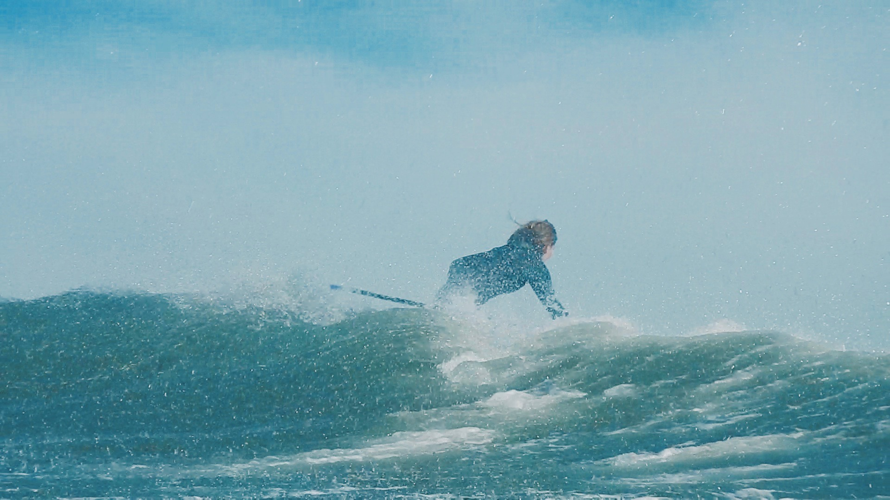
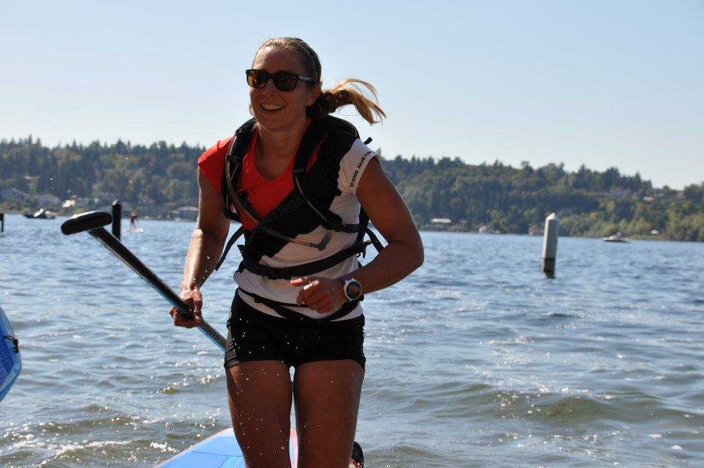
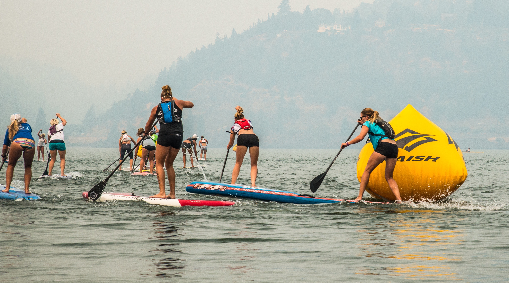
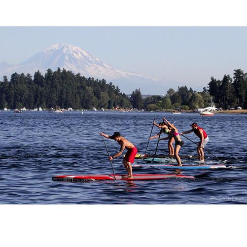
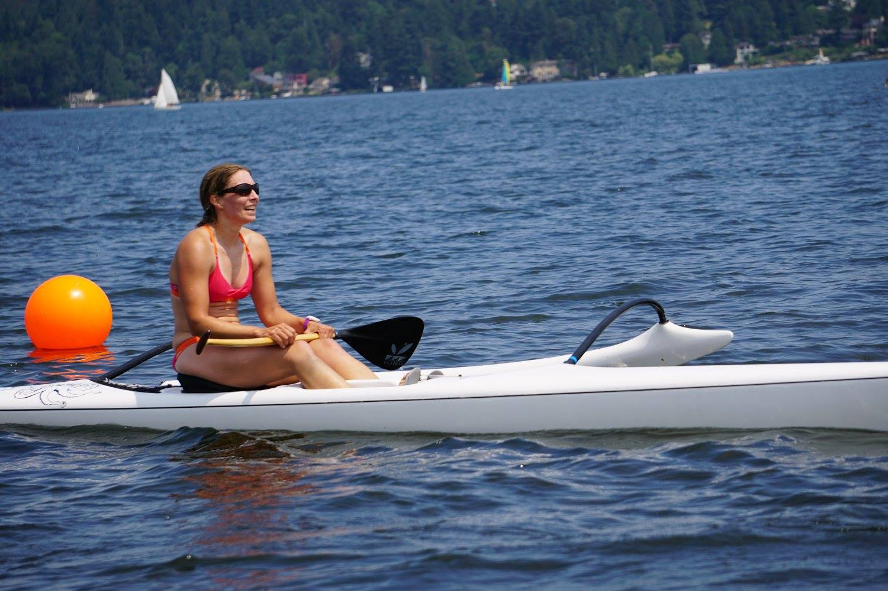

October 2015
Fall Surf
I love summer, so I am not one of those to sing the praises of the cool weather of fall... One good thing about fall though is that it brings good waves to the Pacific Northwest. I have been learning to SUP surf this fall. It is a fun new twist on surfing and SUP. Warms days, with offshore winds, and clean chest high waves are hard to beat!
Photo: Erik Sandstrom
September 2015
The Long Haul
Round the Rock is a staple of the Northwest SUP scene. It caps off the race season with 13 miles of racing. I completed several training runs of the course in the weeks leading up to the event. I am so thankful to Kialoa, who replaced my Kialoa Hulu Small paddle just in time for the race! It seems that someone walked away with my race paddle at the Gorge race...bummer. I was hoping to podium, but generally happy with a fourth place finish, and now I am looking forward to some off-season rest, and starting to train for next year!
Photo: Village of Stoke
August 2015
Smoke on the Water
I have looked forward to the Gorge Paddle Challenge all year! This year, we rented a house for the week before the event. We paddled every day, practicing buoy turns on the flat days, then downwinding to our hearts' content on the windy days. The conditions were great with howling west winds on Thursday and Friday leading up to the event. To my pleasant surprise, my Starboard Race is a great downwind board, as well as flatwater speedster!
Tragically, one of the racers in town from Florida went missing on Friday during a training run, apparently losing his board. My thoughts are with him and his family. His loss has stirred controversy in the SUP community. I empathize with the frustration that some express regarding the limited engagement of the SUP community in search and rescue. I also trust that search and rescue personnel and race directors used their best judgement in how to search for Andres effectively. His disappearance has raised recognition of the importance of safety devices like pfds and leashes for all paddlers.
Back to the event... This year, I competed in the women's elite course and technical races. Lining up for the course race next to some of the fabled names in SUP racing was intimidating, and it threw me off at the beginning of the course race, but I regained my composure after the first lap, and finished strong.
The winds didn't cooperate, so the downwind race on the second day ended up being an 8-mile slightly upwind, up-current race. Smoke from the raging forest fires nearby filled the river valley, especially on the first day. I managed to keep pace with the pack thoroughout the downwind race even after falling off of the draft train. Things to work on for next year... buoy turns and drafting. Time to get to work!
Photo: Michele Black
August 2015
Seafair Championships, Canada, and NJ
August started off with a bang! It started off with the Seafair Northwest SUP Championships. It was the first year of the event, which was the capstone of the 5 five qualifying Northwest Paddle Series races. Hats off to Tommy Bahama, Seafair, and Paddle for Parkinsons for pulling off a fun event! I was very happy to take 2nd against several strong competitors. The day after the Seafair race, I hit the road with my friend, Michele, to compete in the Sun Dog Semiahmoo race. They put on a great event each year! I took 1st in the 10k race for 12'6", and since I was feeling good, I decided to race in the 5k event too! Sometimes you just can't get enough. The next day, I flew off to NJ for some surfing and family time.
Photo: Michele Black
July 2015
Urban Surf Race Series and the Start of the 2015 SUP Season!
The weekly Urban Surf SUP races are happening every Wednesday night! These races brighten up any work week. Anyone is welcome to drop in on a weekly basis, and the results for the series are tallied based on the best 5 of 8 races.

Photo: Doug Broadbent
July 2015
Northwest Waterman's Challenge
Happy 4th of July! I competed in the Northwest Waterman's Challenge over the 4th of July weekend. It is like a triathalon, but it combines swimming, SUP and outrigger- OC1. It is such a fun event, with lots of switches in position through each phase of the race! Thanks Sand Point Paddle Club and Ernie Wang for hosting this awesome event!
Photo: Village of Stoke
April 2015
Women's SUP race clinic with Lina Augaitis!
Superstar SUP racer Lina Augaitis joined us at Alderbrook Resort for a ladies SUP Racing clinic the day after the Saint Paddles Day Race. We all learned so much from Lina, and we enjoyed warming up in the hot tub after a long weekend of paddling! Thanks for joining us, Lina!

Decmber 2014
My First Outrigger Race
I had so much fun on my first outrigger canoe race! I joined a 2-woman relay team with some awesome ladies from up north. We even won our division! I am looking forward to learning more about outrigger and joining in more races with this fantastic group of people.

December 2014
New Starboard Race!
I was lucky enough to snag an early production Starboard Race! After a trip to Battle of the Paddle, it found its way to our garage. It feels fast! It is an inch narrower than the board that I have been using, so I will be working on building my sea legs! I can't wait to get it out on the water more.

August 2014
Another awesome year at the Naish Columbia Gorge Paddle Challenge
My favorite race of the year! We squeezed in a few good days for downwind runs and kiteboarding in the gorge prior to the race, but it was as calm as it gets come the weekend of the race. I ended up competing in the course race. I came in fourth in the Womens Open division and first for my age group. I skipped the downwinder this year because the winds just weren't shaping up. I am looking forward to competing in both the course race and the downwinder next year.